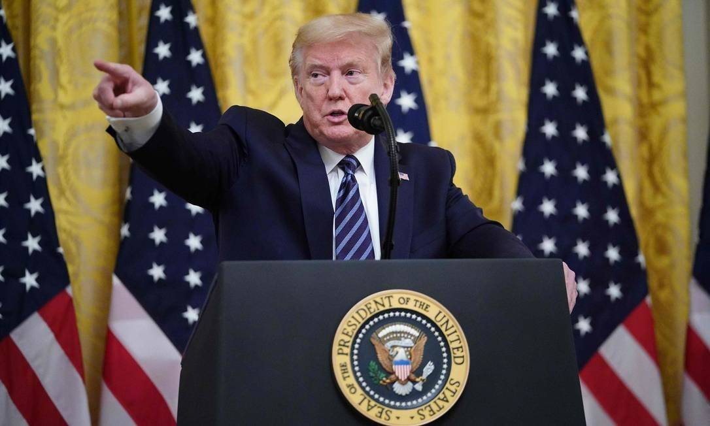

A família do coronavírus foi identificada em 1937 e descrita como corona em 1965. A palavra corona vem de coroa, o nome foi dado por causa da imagem microscópica do vírus, já que ele se assemelha com uma. Existem infinidades de tipos de coronavírus e estes, pelo menos a maioria, afetam apenas animais.
O atual coronavírus, causador da pandemia, é um vírus novo chamado de SARS-CoV-2, ele teve início na cidade de Wuhan, na China e sua origem ainda gera dúvidas. A teoria mais forte é que o vírus tenha vindo do morcego, que mais tarde teria transmitido para o pangolim, animal parecido com o tatu muito utilizado na culinária chinesa. Essa teoria, ainda em estágio de hipótese, tem como referência as experiências feitas em laboratório onde mostram o genoma do vírus que se assemelha com o de outros encontrados nesses animais.
No dia 31 de dezembro de 2019, a China teria notificado a OMS (Organização Mundial da Saúde) sobre uma "pneumonia misteriosa". Mais tarde, países começariam a relatar sobre tal, dentre eles a Itália que com suas primeiras mortes parecia estar ainda confiante. Porém em março o discurso de Giuseppe Conte, primeiro-ministro italiano, mudou totalmente já que as mortes alcançaram um pico de mais de 50%. Os Estados Unidos, que mais tarde se tornariam o epicentro da pandemia, começaram confiantes a partir da fala de seu chefe de Estado Donald Trump, dizendo que tudo estava sobre controle e os avanços incríveis.
 No Brasil, o primeiro caso foi registrado em 26 de fevereiro, e o que parecia estar sobre controle acabou por destrinchar em valas comuns em cemitérios.
Com boa parte do Mundo infectado, a OMS declarou pandemia e emergência global afirmando que todo tipo de cuidado era necessário, em especial a quarentena.
Enquanto infectologistas e cientistas tentam descobrir a cura para o vírus, economistas tentam equilibrar a bolsa que obteve uma boa queda. Diferente do que se via no início da pandemia, a Itália, que era o epicentro, deu espaço para os Estados Unidos que até o dia 09 de maio, conta com mais de 1 milhão de infectados. Outros países, como o Brasil estão em uma situação alarmante, com a falta de leitos em hospitais e a abertura de valas comuns em cemitérios.
As ruas de muitas cidades do Planeta estão totalmente vazias, segundo dados divulgados pela NASA, a China diminuiu sua poluição em uma escala incrível e não só ela, em Veneza, na Itália os canais d'água limparam instantaneamente, e em outras megalópoles, os animais aproveitaram a "prisão" dos humanos para fazerem uma visita às ruas da cidade.
Felizmente, muitas pessoas estão cumprindo o que está sendo recomendado pela OMS, todavia outras não tomaram consciência da gravidade da situação, desrespeitando as normas. Muitos países estão tendo a necessidade de aplicar multas para aqueles que descumprem as ordens passadas.
Os sintomas do novo coronavírus, assemelham-se muito com um simples resfriado, tanto que quando foram relatados os primeiros pacientes em Wuhan, os médicos trataram a doença como uma gripe. Os sintomas são eles:
Se você sentir os sintomas, mantenha-se em isolamento por pelo menos 14 dias e se o quadro piorar, procure um hospital.
A esperança de um Mundo pós-pandemia, é global. Não é uma utopia acreditar que dias melhores estão por vir, mas por enquanto é necessário manter todos em distanciamento e isolamento.
Quando as pessoas voltarem a ativa, vão encontrar um Planeta muito mais limpo e higienizado, vão poder contemplar de um ar mais fresco e de um céu mais azul. É esperado que a partir deste "exemplo", o ser humano dê mais valor tudo o que tem, que a poluição diminua cada vez mais e que aprendam a dar mais sentido a aquilo que tem de mais especial, a vida. Enquanto isso não ocorre, fique em casa.
Para mais informações, clique no link abaixo:
Por: Fábio de Paula Jesus Gondim